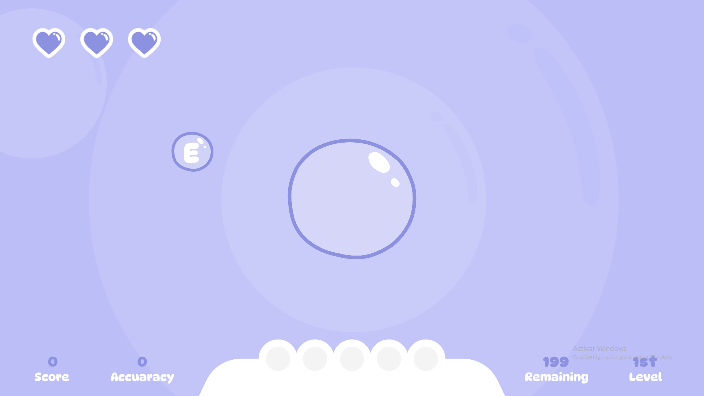
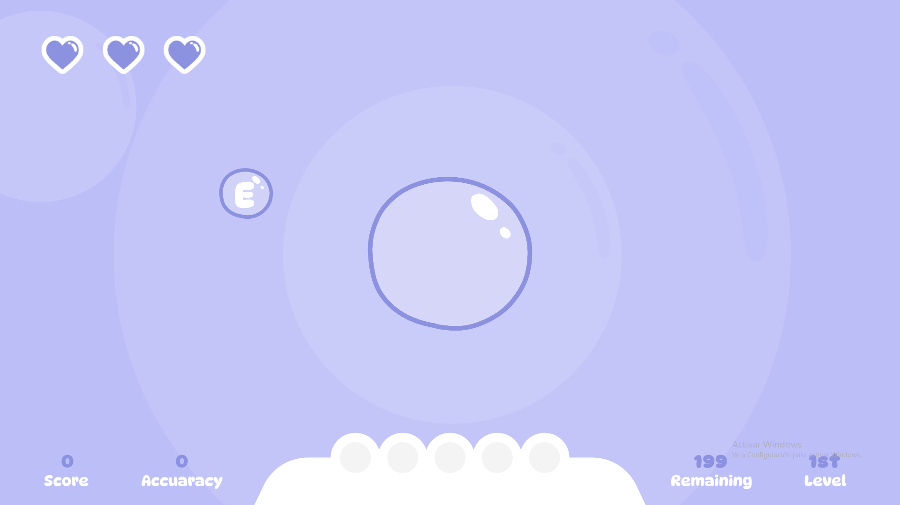
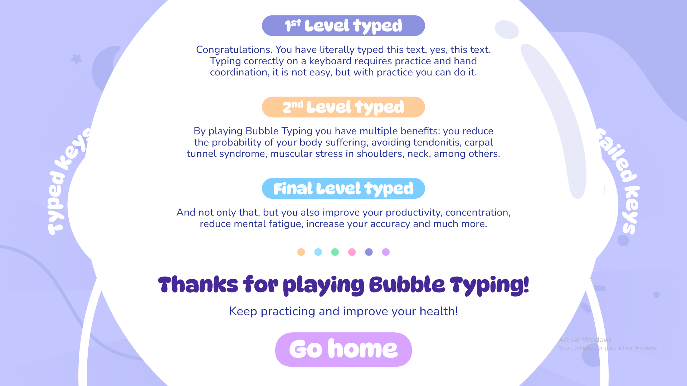
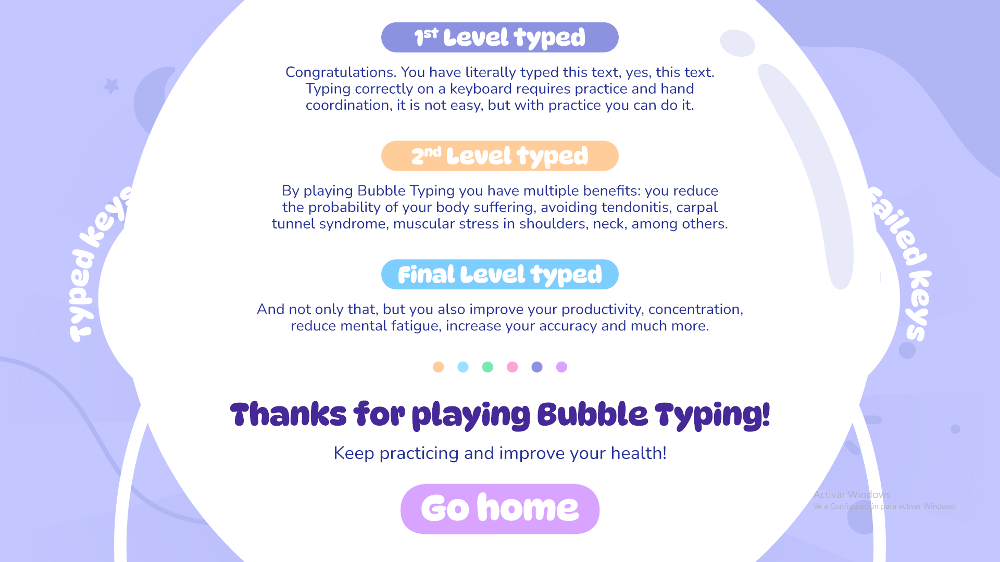

Bubble Typing is a typing game designed to help you take care of your hands while having fun. With simple mechanics and just a few minutes a day, you can significantly improve your health in front of the computer. It reduces the risk of tendonitis, carpal tunnel syndrome, neck and shoulder pain, and much more. Additionally, Bubble Typing was developed entirely during the Global Game Jam 2025, where the main theme was bubbles
Images
 


 

Contribution
In Bubble Typing, I was responsible for the functionality of the UI, scene management, animations (both UI and code-driven), the logic of the spawner, and navigation within the menus. All the graphic design was created from scratch by a teammate during the Global Game Jam, while the rest of the team handled the score system, progress saving, and the main mechanic of popping bubbles.